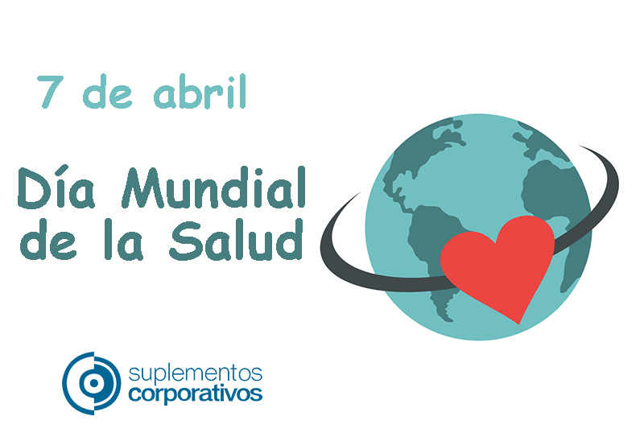
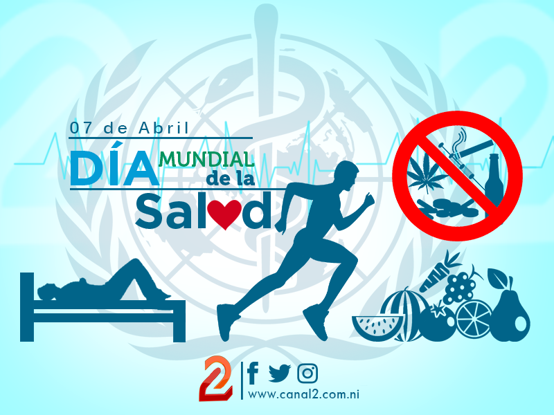

Dia Mundial de la salud 7 de abril
Infografia

En Diciembre de 1945, las delegaciones de Brasil y China propusieron la creación de una organización internacional de salud.
En Nueva York, en julio de 1946 se aprobó la constitución de la Organización Mundial de la Salud. Dicha constitución entró en vigencia el 7 de abril de 1948, cuando el veintiseisavo país de los 61 gobiernos signatarios ratificó su firma.
El Día Mundial de la Salud se estableció como uno de los primeros actos oficiales de la OMS, se observó por primera vez el 22 de julio de 1949, para conmemorar la constitución de la OMS, pero posteriormente se cambió la fecha al 7 de abril para fomentar la participación de los estudiantes, ya que en julio hay muchos planteles educativos cerrados, recordando así la fecha en que oficialmente se adoptó la constitución.
Esta celebración anual desde 1950 utiliza un lema y un tema diferente cada año. La selección del tema, la hace el Director General de la OMS, basado en las sugerencias de los gobiernos miembros y de sus funcionarios.
El Día Mundial de la Salud brinda una oportunidad de ámbito mundial para centrar la atención en importantes cuestiones de salud pública que afectan a la comunidad internacional. Con ocasión del Día Mundial de la Salud se lanzan programas de promoción que se prolongan largo tiempo tras el 7 de abril.
La OMS recomienda que se adopte un estilo de vida saludable a lo largo de todo el ciclo vital, con el fin de preservar la vida, mantenerse sano y paliar la discapacidad y el dolor en la vejez. Los entornos adaptados a las necesidades de las personas mayores, la prevención, la detección precoz y el tratamiento de enfermedades mejoran el bienestar de los mayores. Si no se adoptan medidas, el envejecimiento de la población dificultará la consecución de los objetivos de desarrollo socioeconómico y humano.
En la campaña del Día Mundial de la Salud de este año, la OMS desea ir más allá de la labor de sensibilización para promover acciones concretas y un cambio positivo. Esta campaña tiene como objetivo conseguir la participación de toda la sociedad –las instancias normativas, los políticos, los mayores y los jóvenes.

La Organización Mundial de la Salud (OMS, en inglés WHO - World Health Organization) es un organismo especializado de las Naciones Unidas fundado en 1948, cuyo objetivo es alcanzar para todos los pueblos el máximo grado de salud, definida en su Constitución como un estado de completo bienestar físico, mental y social, y no solamente como la ausencia de afecciones o enfermedades.
La OMS presta especial atención a la lucha contra los problemas sanitarios más importantes, sobre todo en los países en desarrollo y en contextos de crisis.
Desde la Organización sus expertos elaboran directrices y normas sanitarias, ayudan a los países a abordar cuestiones de salud pública y se fomenta la investigación sanitaria. Por mediación de la OMS, los gobiernos pueden afrontar conjuntamente los problemas sanitarios mundiales y mejorar el bienestar de las personas.
Además del refuerzo de los sistemas de salud, entre sus prioridades figura el cumplimiento de los Objetivos de Desarrollo del Milenio de Naciones Unidas en materia sanitaria.

El objetivo de la cobertura sanitaria universal es asegurar que todas las personas reciban los servicios sanitarios que necesitan, sin tener que pasar penurias financieras para pagarlos. Para que una comunidad o un país pueda alcanzar la cobertura sanitaria universal se han de cumplir varios requisitos, a saber: • un sistema de salud sólido; • un sistema de financiación de los servicios de salud; • acceso a medicamentos y tecnologías esenciales; • personal sanitario bien capacitado.
Para mas informacion consulta la pagina de cobertura Sanitaria UniversalLa CSU no implica la cobertura gratuita de todas las intervenciones sanitarias posibles, independientemente de su costo, ya que ningún país puede permitirse ofrecer todos los servicios gratuitamente de forma sostenible.
La CSU no se refiere únicamente a la financiación de la salud: abarca todos los componentes del sistema de salud, a saber, los sistemas de prestación de servicios de salud, el personal sanitario, las instalaciones sanitarias o las redes de comunicación, las tecnologías sanitarias, los sistemas de información, los mecanismos de garantía de la calidad, la gobernanza y la legislación.
La CSU no solo tiene por finalidad asegurar un conjunto de servicios de salud mínimos, sino también lograr la ampliación progresiva de la cobertura de los servicios de salud y de la protección financiera, conforme se disponga de más recursos. La CSU no solo engloba los servicios de tratamiento específicos, sino también incluye los servicios a la población como las campañas de salud pública, la adición de flúor al agua, el control de los lugares de reproducción de los mosquitos, entre otros.
La CSU comprende mucho más que solo la salud. Adoptar medidas para alcanzar la cobertura sanitaria universal equivale a adoptar medidas para lograr la equidad, las prioridades en materia de desarrollo y la inclusión y cohesión sociales
.

 1
1 2
2